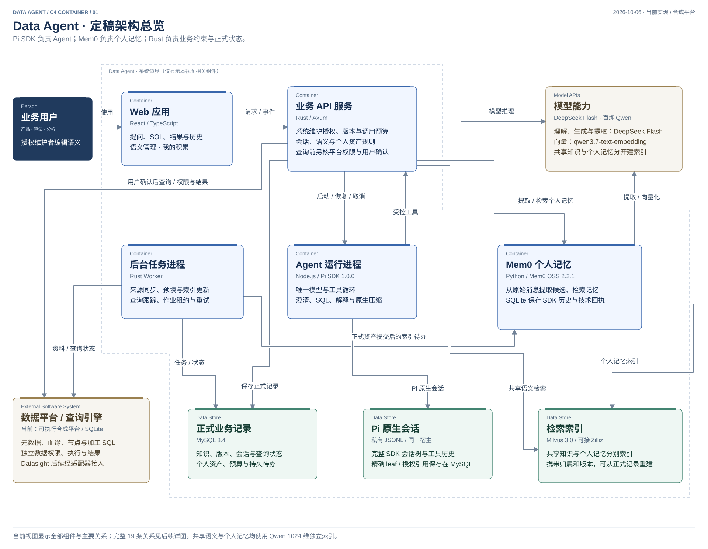

<style>
#da-overall { display:grid; gap:16px; }
#da-overall .route { display:grid; gap:8px; }
#da-overall .flow { display:flex; flex-wrap:wrap; align-items:center; gap:8px; margin:0; padding:0; list-style:none; }
#da-overall .flow li { display:flex; align-items:center; gap:8px; }
#da-overall .connector { color:var(--muted-foreground); }
#da-overall .detail-heading { display:flex; flex-wrap:wrap; justify-content:space-between; align-items:center; gap:8px; }
#da-overall h3 { margin:0; }
#da-overall .selected-detail { margin:0; overflow-wrap:anywhere; }
#da-overall .route-label { color:var(--muted-foreground); }
#da-overall .dependencies { display:grid; gap:8px; }
</style>
<section style="font:16px/1.7 system-ui,sans-serif;color:#172e50;background:#fff;padding:18px;border:1px solid #dbe4ef;border-radius:8px">
  <h2 style="margin:0 0 8px">当前定稿架构 · Pi SDK + Mem0</h2>
  <p>生成模型：DeepSeek Flash。向量方案：百炼 Qwen。<strong>共享语义与个人记忆均已接入 Qwen 1024 维，分别保存到独立 Milvus 集合。</strong></p>
  <p><a href="../architecture/README.md">查看完整架构与组件职责</a> · <a href="../architecture/data-agent-overview.svg">放大总览</a></p>
  
</section>
<details style="margin-top:18px">
<summary>展开 2026-10-03 的历史讨论草图（状态已过时）</summary>
<div id="da-overall">
  <p class="text-small text-muted">公开教学版 · 2026-10-03 · 全部业务样例均为虚构。当前决定与实现进度见 <a href="../semantic-retrieval-design.md">实施基线</a>；本页不代表组件已运行。</p>
  <h3>Data Agent：知识、查询与纠错</h3>
  <div class="viz-row"><span class="viz-badge">公开教学版 · 2026-10-03</span><span class="text-small text-muted">示例大目录全空间 · Rust 主后端</span></div>
  <section class="route" aria-label="资料准备流程">
    <span class="route-label text-small">共享知识的准备与维护</span>
    <ol class="flow">
      <li><button type="button" class="btn" data-module="m1" aria-pressed="false">① 数据平台适配器接入</button><span class="connector" aria-hidden="true">→</span></li>
      <li><button type="button" class="btn" data-module="m2" aria-pressed="true">② 语义生成与维护</button><span class="connector" aria-hidden="true">→</span></li>
      <li><button type="button" class="btn" data-module="m3" aria-pressed="false">③ 语义存储与检索</button></li>
    </ol>
  </section>
  <div class="viz-row"><button type="button" class="btn" data-module="documents" aria-pressed="false">文档 · 章节 · 跨表业务主题</button><span class="text-small connector">↔ ② 维护与关联 → ③ 检索</span></div>
  <hr>
  <section class="route" aria-label="用户查询流程">
    <span class="route-label text-small">一次用户提问</span>
    <ol class="flow">
      <li><button type="button" class="btn" data-module="m4" aria-pressed="false">④ 提问入口</button><span class="connector" aria-hidden="true">→</span></li>
      <li><button type="button" class="btn" data-module="m5" aria-pressed="false">⑤ 理解与规划</button><span class="connector" aria-hidden="true">→</span></li>
      <li><button type="button" class="btn" data-module="m6" aria-pressed="false">⑥ SQL 生成与检查</button><span class="connector" aria-hidden="true">→</span></li>
      <li><button type="button" class="btn" data-module="m7" aria-pressed="false">⑦ 查询执行</button><span class="connector" aria-hidden="true">→</span></li>
      <li><button type="button" class="btn" data-module="m8" aria-pressed="false">⑧ 分析与解释</button></li>
    </ol>
  </section>
  <div class="dependencies text-small"><span>③ 当前语义与文档 ＋ 当前会话条件 ＋ 适用记忆 → ⑤</span><span>⑧ → ④ 连续追问；④～⑧ → 会话与查询记录</span></div>
  <hr>
  <section class="route" aria-label="贯穿全流程的用户基础">
    <span class="route-label text-small">按用户与空间管理</span>
    <div class="viz-row"><button type="button" class="btn" data-module="identity" aria-pressed="false">身份与权限</button><button type="button" class="btn" data-module="records" aria-pressed="false">会话 · 查询记录 · 本次条件</button><button type="button" class="btn" data-module="memory" aria-pressed="false">个人记忆 · 纠错经验</button></div>
    <div class="viz-row"><span class="text-small">记忆 ↔</span><button type="button" class="btn" data-module="engine" aria-pressed="false">开源记忆服务 · 可替换</button><span class="viz-badge">Mem0 待验证</span></div>
  </section>
  <section class="route" aria-label="用户纠错反馈路径">
    <span class="route-label text-small">用户纠错的复用路径</span>
    <ol class="flow"><li><button type="button" class="btn" data-module="correction" aria-pressed="false">用户纠错</button><span class="connector" aria-hidden="true">→</span></li><li><span>本次修正 ＋ 带范围的纠错记录</span></li></ol>
    <div class="dependencies text-small"><span>个人可复用经验 → 长期记忆 → 后续问题核对采用</span><span>通用口径修正 → ② 共享语义；经验证的正确查询 → ③ 案例库</span></div>
  </section>
  <div class="viz-row"><button type="button" class="btn" data-module="storage" aria-pressed="false">存储与任务</button><button type="button" class="btn" data-module="mvp" aria-pressed="false">MVP 与扩展边界</button></div>
  <hr>
  <div class="detail-heading"><h3 data-title>② 语义生成与维护</h3><span class="viz-badge" data-status>页面原型已做 · 后端待实现</span></div>
  <div class="viz-row"><label class="form-label">查看方面<select class="form-select" data-facet aria-label="查看所选模块的职责、存储或验收"></select></label></div>
  <div class="selected-detail" aria-live="polite" data-detail></div>
</div>
</details>
<script>
(() => {
  const root = document.getElementById('da-overall');
  const modules = {
    m1:{name:'① 数据平台适配器接入',status:'方向已定 · 接口待核实',rows:[
      ['用一句话说','把平台已有资料和可复用能力接进来。'],
      ['输入 → 输出','元数据、表血缘、调度节点、节点 SQL → 带来源、版本、同步状态的资料。'],
      ['谁负责','Rust 平台适配代码与后台任务；数据平台通过适配器提供资料与查询能力。'],
      ['保存什么','MySQL：资料快照、平台对象标识、来源版本、同步记录。业务明细留在原数仓。'],
      ['审计后补齐','核实身份传递、执行方言、查询标识、状态恢复、取消、分页、截断及数据到齐依据。'],
      ['出错时','部分同步失败保留缺口；本次没收到某张表，不能直接当作已删除。'],
      ['怎样证明','用一张真实表核对元数据、节点和 SQL；接口缺项明确标未知。']
    ]},
    m2:{name:'② 语义生成与维护',status:'页面原型已做 · 后端待实现',rows:[
      ['用一句话说','把原始资料变成容易理解、能指导计算的数据说明。'],
      ['输入 → 输出','DDL、加工 SQL、血缘、业务文档、获准的数据统计 → 表/字段解释、候选指标、查询关联、文档章节、证据与缺口。'],
      ['谁负责','SQL 解析提取确定事实；DeepSeek 辅助解释和发现冲突；数据开发修订。'],
      ['保存什么','MySQL：原始材料、语义定义、文档正文与章节、业务主题、人工修订、对象关联、版本及验证记录。'],
      ['审计后补齐','修改计算规则后，计划和 SQL 采用新规则；保存核对起点版本；提示共享指标的影响范围。'],
      ['出错时','解析失败保留原文和具体缺口；上游 SQL 改变时保留人工文字，标出旧依据需要复核。'],
      ['怎样证明','既检查页面保留了修改，也检查后续查询用了正确版本；纯文字修改只需影响相应解释。']
    ]},
    m3:{name:'③ 语义存储与检索',status:'详细设计已有 · 效果待验证',rows:[
      ['用一句话说','从上千张表的目标目录里，找齐本次问题真正需要的说明和计算依据。'],
      ['输入 → 输出','问题、当前身份与会话条件 → 表字段、指标、查询关联、相关文档章节、案例、版本及缺项。'],
      ['谁负责','Rust 检索流程；MySQL 正式定义；Zilliz/Milvus 派生索引；向量化模型需单独选择。'],
      ['怎样找','名称/别名、关键词与向量找候选；回源核权限及版本；补齐规则和文档的适用范围、例外与相关章节。'],
      ['审计后补齐','本题所需依据逐项检查。相似度高只代表候选相关，不能证明分母、时间、粒度都适用。'],
      ['出错时','区分含义不明确、缺资料、无权限、未同步、预算不足和服务故障；对外不暴露无权内容。'],
      ['怎样证明','相似表、同名指标、低排名但必需的关系、新别名和旧索引等案例都要检查。']
    ]},
    m4:{name:'④ 用户提问入口',status:'能力范围已定 · 页面待设计',rows:[
      ['用一句话说','让产品、算法、分析和数据开发提问，看见条件、状态和结果。'],
      ['输入 → 输出','原始问题、澄清选择、追问 → 会话条件及本次任务。'],
      ['谁负责','React + TypeScript 方向；通过 Rust 接口接收状态和结果。'],
      ['保存什么','MySQL：所属用户/空间、原始消息、会话条件、任务引用、纠错来源和采用的记忆版本；保留期限待定。'],
      ['审计后补齐','展示本次怎么算、还缺什么、查询是否完成、结果是否拿全；提供取消和错误反馈入口。'],
      ['出错时','等待有状态；失败说明停在哪一步；澄清只问影响当前结果的条件。'],
      ['怎样证明','追问保留未改变的时间和过滤；换话题重新判断；口径变化明确提示。']
    ]},
    m5:{name:'⑤ Agent 理解与规划',status:'流程已有建议 · 规则待细化',rows:[
      ['用一句话说','把一句需求整理成“这次具体怎么算”。'],
      ['输入 → 输出','用户原话、当前会话、语义与文档、适用记忆 → 统计对象、时间、分组、过滤、去重、关联及引用版本。'],
      ['谁负责','DeepSeek 辅助理解；Rust 控制步骤、预算与可检查的规则。'],
      ['保存什么','MySQL：本次计算条件、选用依据及版本、澄清记录、计划和未解决问题。'],
      ['审计后补齐','这些条件同时约束 SQL 和结果解释；按本题需要补分子分母、空值、维度时点与计算顺序。'],
      ['出错时','关键含义或条件不明时澄清；检查记忆与当前语义的差异。个人习惯不暗改标准指标；明确改口径时标明自定义。'],
      ['怎样证明','月客户数不能累加每日去重数；当前客户地区不能称为历史地区；累计退款不能当成退款当月现金流。']
    ]},
    m6:{name:'⑥ SQL 生成与检查',status:'复杂 SQL 已列入 MVP · 实现待验证',rows:[
      ['用一句话说','把计算条件写成 SQL，并检查有没有写偏。'],
      ['输入 → 输出','计算条件、有效定义、关系和适用案例 → 可查看的 SQL、检查结果和限制。'],
      ['谁负责','标准指标逐步按规则生成；复杂取数用模型辅助；Rust 与平台能力负责各层检查。'],
      ['需要支持','多表、子查询、聚合、去重和窗口。依据充分的新查询可生成，历史案例只是参考。'],
      ['审计后补齐','分别检查语法/模板、表字段函数、只读与权限、平台可执行性、统计规则。'],
      ['出错时','保留具体原因；有限修复；不能靠删过滤、换时间或改变关联来让 SQL 跑通。'],
      ['怎样证明','语法通过、执行通过、业务结果正确分开验证；SQLite 离线样例与实际平台方言需分别验证。']
    ]},
    m7:{name:'⑦ 查询执行',status:'优先复用平台 · 契约待核实',rows:[
      ['用一句话说','按用户权限把只读 SQL 交给平台，并跟踪到真实结果。'],
      ['输入 → 输出','已检查的 SQL、身份、任务和请求标识 → 平台查询标识、状态、结果页与错误。'],
      ['谁负责','Rust 后台任务跟踪；平台执行引擎计算并强制落实数据权限。'],
      ['保存什么','MySQL：SQL、条件与版本、提交记录、平台查询标识、状态和错误；明细由查询服务提供。'],
      ['审计后补齐','处理回执丢失、重启、重复点击和取消竞态；设扫描、耗时、并发、重试预算。'],
      ['出错时','无法确认是否已提交时显示状态未知，先查证；取消请求要等平台结果；不盲目重复提交。'],
      ['怎样证明','故障模拟要检查实际提交次数和终态；本地任务不重复不等于平台必然只执行一次。']
    ]},
    m8:{name:'⑧ 结果分析与解释',status:'基本分析已列入 MVP · 结果规则待细化',rows:[
      ['用一句话说','把查到的数解释清楚，并说明它覆盖什么范围。'],
      ['输入 → 输出','数据、完整性与到齐状态、SQL、口径 → 汇总、趋势、分组对比和有依据的说明。'],
      ['谁负责','SQL 或确定性程序计算数值；DeepSeek 辅助表达；前端展示结果与采用条件。'],
      ['保存什么','任务关联的结果标识、字段类型、范围、分页/截断状态、查询时间与可用的数据版本。'],
      ['审计后补齐','分别说明结果是否取全、业务数据是否到齐；区分 NULL、0、无记录和权限错误，保留精度。'],
      ['出错时','预览不能代表全量；数据未到齐不解释为下降；解释失败保留查询结果，不重新跑 SQL。'],
      ['怎样证明','参考结果做数值比较；空值、零分母、大整数、缺页和迟到分区都要有预期行为。']
    ]},
    documents:{name:'文档、章节与业务主题',status:'原型已更新 · 首版粘贴正文，自动同步后置',rows:[
      ['职责','字段长说明、单表业务与跨表业务背景；一份文档供多处引用。'],
      ['输入 → 输出','已有正文或材料分析草稿 → 稳定文档/章节标识、适用范围、对象引用、来源与版本。'],
      ['存储与检索','MySQL 保存完整正文与引用；Zilliz 索引摘要和章节；命中后补齐相关上下文与当前规则。'],
      ['虚构例子','退款字段关联业务指南的支付归属章节；订单、支付和客户标签共享跨表统计说明。'],
      ['变化处理','来源或章节变化后定位受影响规则、案例及记忆；保留人工内容和历史引用版本。'],
      ['验收','同份文档多处引用、章节定位、人工改版、过期引用和无权正文。页面演示与真实访问分别验证。']
    ]},
    identity:{name:'身份与权限',status:'MVP 基础 · 平台接口待核实',rows:[
      ['职责','服务器确认当前用户与数据空间，贯穿语义、文档、记忆、模型输入、查询和历史结果访问。'],
      ['边界','私人会话与记忆按所有者隔离；共享语义按平台可见范围读取；引用关系不授予访问权。'],
      ['引擎接入','Rust 传递可信用户和空间范围；记忆引擎返回候选后仍核对正式记录。'],
      ['验收','A 的私有记录不能进入 B 的检索或模型输入；权限收回后旧对话与结果也按当前规则检查。']
    ]},
    records:{name:'会话、查询记录与本次条件',status:'展示原型已补 · 正式存储待实现',rows:[
      ['职责','保留每个用户问过什么、采用哪些条件和依据、生成什么 SQL，以及任务是否真正完成。'],
      ['保存什么','MySQL：user/workspace/session/turn/task 标识、消息、条件、SQL、语义/文档/记忆版本、状态和结果引用。'],
      ['连续追问','同一任务保留未改变条件；切换话题重新判断；一次性条件不会自动变成长期习惯。'],
      ['结果边界','历史结果保留期限和快照能力待核实；不默认复制全部结果，不把上次数字当成当前事实。'],
      ['验收','会话归属、追问条件、刷新恢复、失败终态、采用版本和权限变化可追踪。']
    ]},
    memory:{name:'个人长期记忆与纠错经验',status:'MVP 基础 · 引擎待验证',rows:[
      ['职责','跨会话记住稳定偏好、业务上下文和有适用范围的纠错经验。'],
      ['保存什么','内容、用户与空间、适用对象/条件、原问题、来源与依据、版本、状态、被替代关系。'],
      ['怎样使用','检索相关候选 → 回源检查所有者、范围、状态与依赖版本 → 交给⑤核对采用，并记录本次使用。'],
      ['修改与删除','可编辑、停用和删除；旧索引即使命中，也要排除已失效版本。新纠错可按对象直接补查。'],
      ['冲突处理','本次展示要求优先于旧偏好；计算规则按当前证据核对，不能仅凭最后一句纠错判定事实。'],
      ['验收','改问法能找到相关纠错；不同业务不误用；不同用户不串用；被替代或删除内容不再采用。']
    ]},
    engine:{name:'可替换的开源记忆服务',status:'推荐先验证 Mem0 · 尚未安装',rows:[
      ['承担什么','辅助记忆提取、组织与检索；应用管理身份、正式纠错记录、有效状态及采用规则。'],
      ['接入方式','Rust 经内部 HTTP 调用；索引候选关联正式记录标识和版本，返回后回源核对。'],
      ['Mem0 依据','官方主线已有 DeepSeek 与 Milvus/Zilliz 适配；实际中文效果、过滤能力和联调仍需试验。'],
      ['依赖与限制','当前默认自托管套件包含 PostgreSQL 等；追加式提取不能保证自动替代旧错误。版本和部署方式待选。'],
      ['替换边界','统一登记、检索、停用/删除与同步状态的接口；记录和共享语义不绑定某个引擎内部格式。'],
      ['服务故障','保留会话与已知对象纠错；说明记忆检索不可用，按当前可用依据继续或指出关键缺口。']
    ]},
    correction:{name:'用户纠错的最小闭环',status:'核心基础 · 自动保存明确且可复用纠错已定',rows:[
      ['记录内容','原问题/错误做法、用户原话、整理后的修正、适用范围、对象、证据、状态与版本。'],
      ['本次修正','先纠正当前理解；必要时重新生成 SQL，保持执行授权和检查，保留前后变化。'],
      ['长期复用','明确且有复用价值的纠错自动按范围保存并告知；未核验内容用于提醒检查，不冒充已经正确的统计规则。'],
      ['共享改进','通用口径转入②维护；语义生效后保留修订引用；核对结果后的正确 SQL 可进入案例库。'],
      ['防止旧错复发','显式替代旧记录，登记索引任务，读取时检查当前状态；关联对象可补查最新纠错。'],
      ['验收例子','纠正月客户数算法后，再换种问法仍在整月去重；不能误套到订单数或注册客户数。']
    ]},
    storage:{name:'存储与持久任务',status:'MySQL / Zilliz 偏好沿用',rows:[
      ['MySQL','正式语义与文档、版本和引用、按用户的会话/任务、纠错/记忆状态及同步任务。'],
      ['Zilliz / 记忆索引','可重建的检索内容与正式记录标识；共享知识和私人记忆的访问范围分别控制。'],
      ['原数仓 / 数据平台适配器','业务明细、查询执行与现有权限；Agent 保存必要结果引用，不默认搬走全量数据。'],
      ['一致性','正式记录与索引任务同事务登记；旧任务不能回退新版本；读取候选时回源检查。'],
      ['失败与恢复','有限重试、持续任务状态、执行未知先查证；区分成功、取全、到齐和数值为零。']
    ]},
    mvp:{name:'MVP 与后续扩展',status:'基础先完整 · 避免新增无依据的组件',rows:[
      ['本期基础','八模块主流程、语义与文档维护、用户隔离、会话/查询记录、可管理的记忆、带范围的纠错和验证。'],
      ['先验证','Pi 工具循环与平台 mock；基础记忆先可用，再测 Mem0 候选的范围过滤、中文纠错召回、替代/删除、依赖变化、延迟与调用成本。'],
      ['后续扩展','经权限核对的团队经验、纠错自动合并建议、验证案例晋升、按反馈调排序、复杂时序关系。'],
      ['保留扩展条件','稳定对象和版本、来源与范围、引用/替代关系、记忆服务接入接口。'],
      ['暂不前置','图数据库、多 Agent、复杂审批平台、全量对话自动学习、模型微调。']
    ]}
  };
  let selected = 'correction';
  let facet = 0;
  function render(id, nextFacet = 0) {
    selected = modules[id] ? id : 'correction';
    const data = modules[selected];
    facet = Number.isInteger(nextFacet) && data.rows[nextFacet] ? nextFacet : 0;
    root.querySelector('[data-title]').textContent = data.name;
    root.querySelector('[data-status]').textContent = data.status;
    root.querySelectorAll('[data-module]').forEach(b => b.setAttribute('aria-pressed',String(b.dataset.module === selected)));
    const picker = root.querySelector('[data-facet]'); picker.replaceChildren();
    data.rows.forEach(([label],index) => {const option=document.createElement('option');option.value=String(index);option.textContent=label;picker.append(option);});
    picker.value=String(facet);
    root.querySelector('[data-detail]').textContent=data.rows[facet][1];
  }
  function restore(state) {if(state?.privateContent?.revision===2)render(state.privateContent.selectedModule,state.privateContent.facet);else render('correction');}
  function save(){if(window.openai?.setWidgetState)window.openai.setWidgetState({modelContent:{view:'Data Agent：知识、查询与纠错',module:selected,aspect:modules[selected].rows[facet][0]},privateContent:{revision:2,selectedModule:selected,facet}}).catch(()=>{});}
  root.querySelectorAll('[data-module]').forEach(b => b.addEventListener('click',() => {
    render(b.dataset.module);
    save();
  }));
  root.querySelector('[data-facet]').addEventListener('change',event=>{render(selected,Number(event.target.value));save();});
  window.addEventListener('openai:set_globals',e => {if(e.detail?.globals?.widgetState) restore(e.detail.globals.widgetState);});
  restore(window.openai?.widgetState);
})();
</script>
